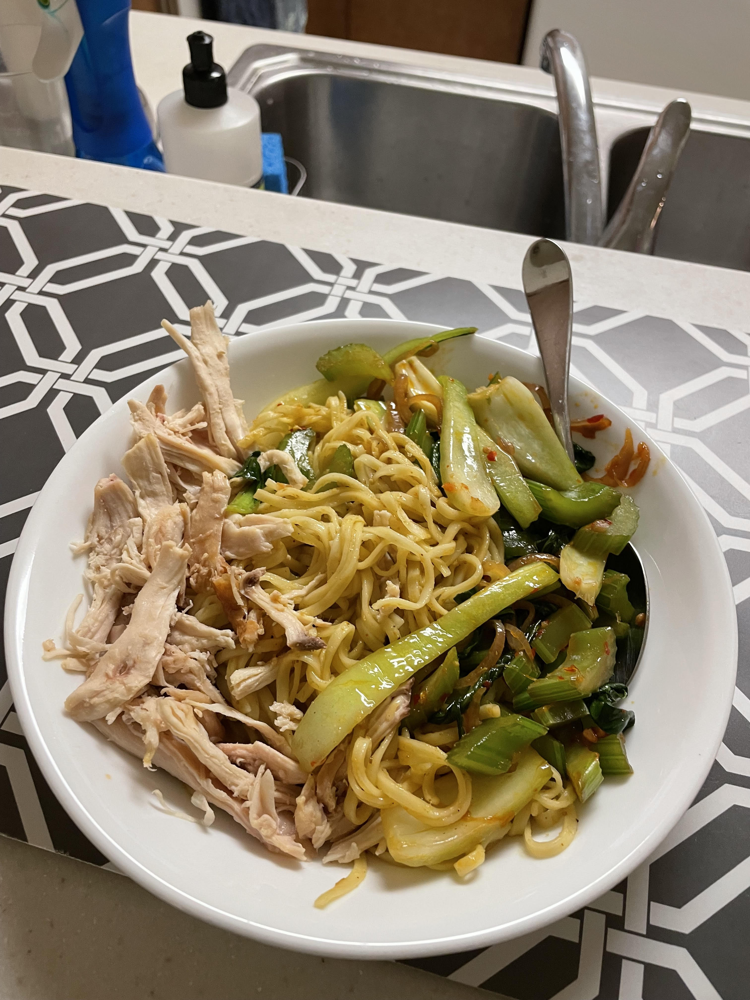

Chicken Soup
The rotisserie chicken strikes back!
I was craving curry noodles the other day because my mom makes it at home. So naturally, I had to try making it myself.
This meal was almost a flop, but being the amazing chef I am, I saved it from flopping.
The issue was that I didn't have any coconut milk to add to the curry paste, so the curry wasn't soupy how I wanted it to be.
I ended up making some chicken soup with chicken boullion I had in the fridge and just added it on top of the already assembled meal.
I stir fried bok choy, celery, and shallot together with some asian seasonings and added it on top, along with some shredded rotisserie chicken from Costco (a new one ofc).
Boyfriend rating: 9/10 :(
Critiques: "Because there could have been more meat on there uhhhh let me try to remember bigger portion for a bigger guy"
Stay tuned for more meals!
